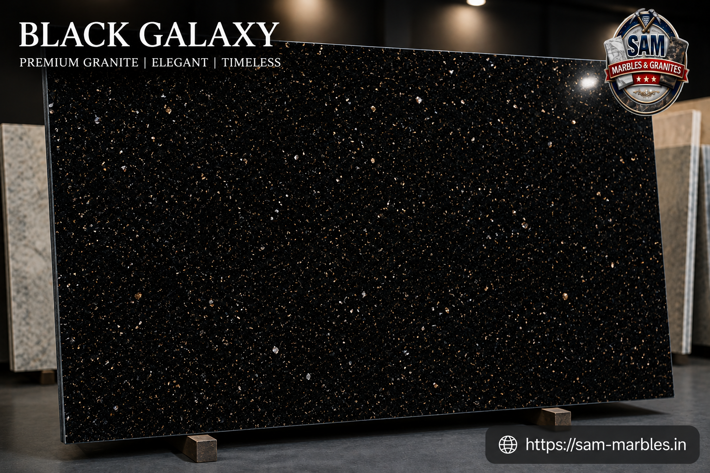
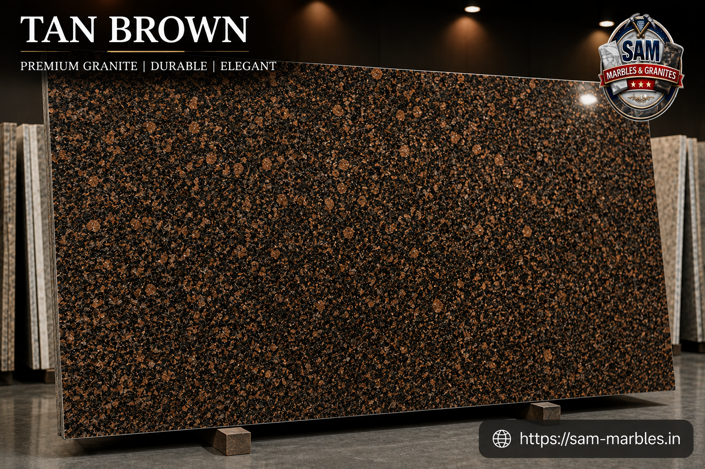
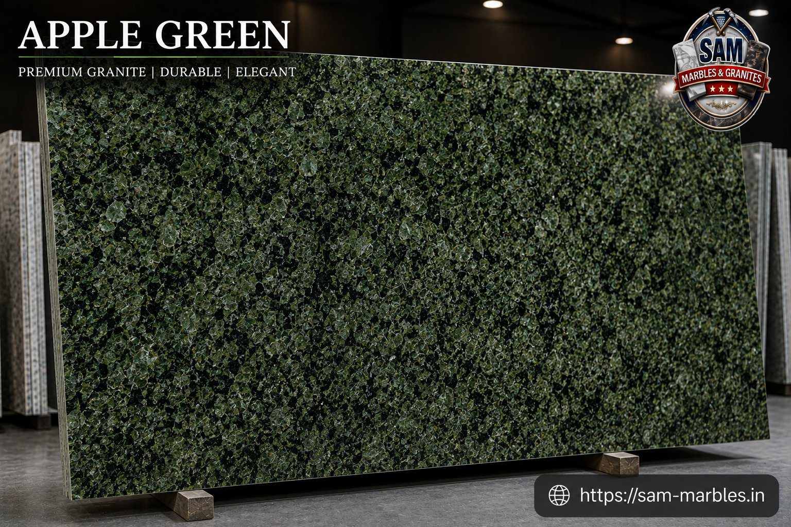
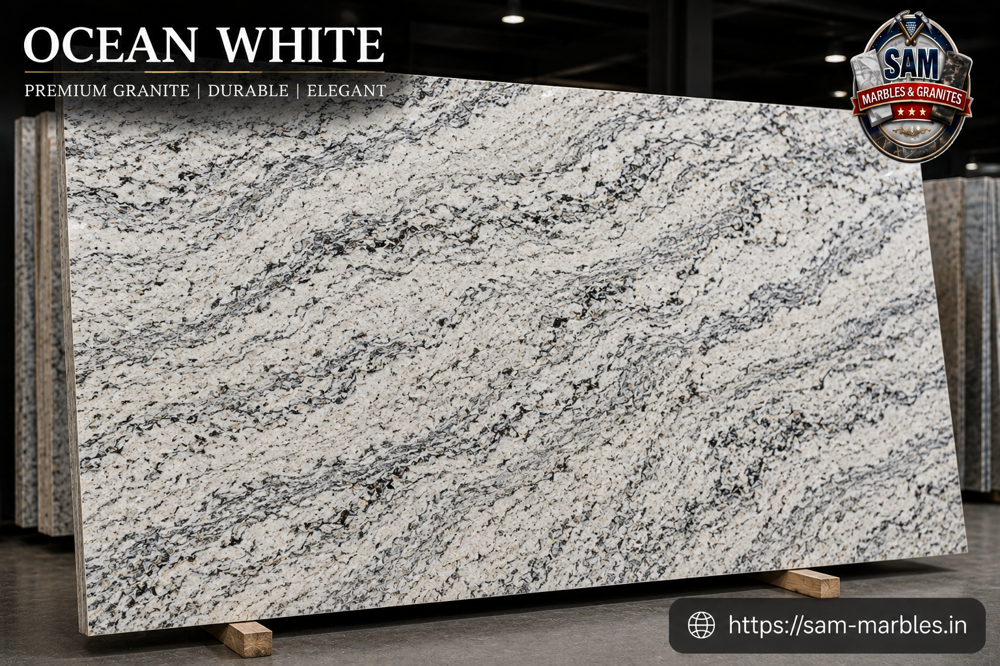
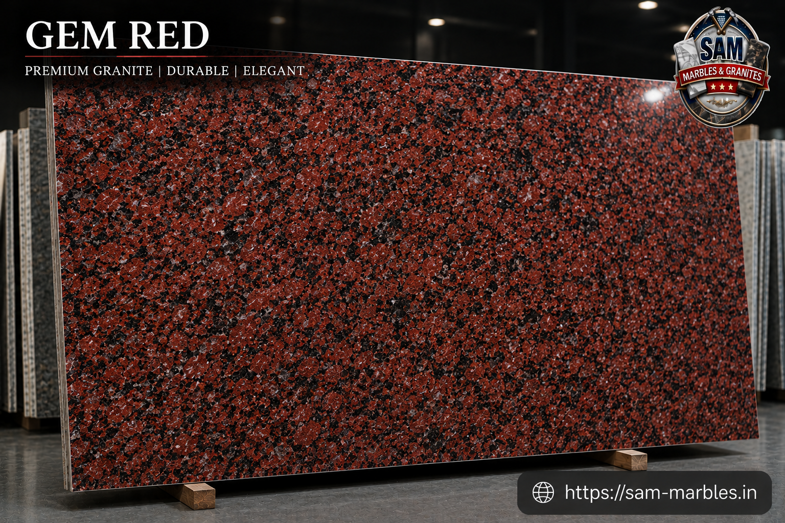

Premium Granite Collection
Strength, Durability and Timeless Beauty
Granite is one of the most durable and versatile natural stones used in modern architecture and interior design. Its exceptional strength, unique textures and wide range of colours make it an ideal choice for flooring, countertops, staircases, wall cladding and outdoor spaces.
At Sam Marbles & Granites, we offer a carefully selected collection of premium granites sourced from trusted suppliers across India. Whether you are building a new home or renovating an existing space, our granite collection combines elegance, performance and long-lasting value.
Our Granite Collection
We at Sam Marbles & Granites currently deal with the following granite varieties.

Black Galaxy
Black Galaxy granite is known for its rich black surface highlighted with sparkling golden specks. Its luxurious appearance makes it a popular choice for kitchens, countertops and premium interiors. The stone offers excellent durability and timeless elegance.

Tan Brown
Tan Brown granite features a striking combination of brown, black and grey shades. Its unique texture complements both traditional and contemporary spaces. The granite is highly durable and easy to maintain.

Apple Green
Apple Green granite stands out with its refreshing green tones and natural patterns. It adds a vibrant and elegant touch to flooring, walls and decorative spaces. Its strength ensures long-lasting performance.

Ocean White
Ocean White granite is admired for its graceful white and grey patterns. It creates a bright and spacious ambience in residential and commercial interiors. The stone combines beauty with exceptional durability.

Gem Red
Gem Red granite features deep red shades with attractive natural textures. Its bold appearance enhances the beauty of floors, walls and countertops. The granite offers strength and long-term reliability.

Classic Red
Classic Red granite is valued for its vibrant colour and timeless appeal. It is widely used in homes, offices and commercial projects. Its durable nature makes it suitable for both indoor and outdoor applications.

Lakshmi / Lakka Red
Lakshmi Red granite showcases rich red tones with elegant natural patterns. It is ideal for creating striking feature walls and flooring designs. The stone is known for its durability and premium finish.

Z-Brown
Z-Brown granite offers a sophisticated blend of earthy colours and textures. Its natural appearance complements a wide variety of architectural styles. The granite remains a preferred choice for modern interiors.

Coin Black Lapotra
Coin Black Lapotra granite features a polished black finish with distinctive natural patterns. It adds elegance and sophistication to countertops and decorative spaces. The granite is highly durable and easy to maintain.

Steel Grey
Steel Grey granite is admired for its subtle grey tones and modern appearance. It blends seamlessly with a variety of interior styles and colour schemes. Its strength makes it an excellent choice for heavy-use areas.

Tan Brown Lapotra
Tan Brown Lapotra granite combines a polished finish with rich brown textures. It enhances the beauty of kitchens, staircases and commercial spaces. The stone offers lasting durability and elegance.

Apple Green Lapotra
Apple Green Lapotra granite showcases vibrant green shades with a smooth polished surface. Its unique appearance makes it suitable for premium interiors and decorative elements. The granite delivers both beauty and strength.

R-Black Lapotra
R-Black Lapotra granite features a deep black finish with a sophisticated appearance. It is widely used in modern homes and commercial projects. Its durability ensures long-lasting performance.

Daisy Green
Daisy Green granite offers a beautiful blend of green tones and natural patterns. It creates an elegant and refreshing ambience in any setting. The stone is valued for both its appearance and durability.

Black Granite
Black granite is one of the most popular choices for modern interiors due to its bold and elegant appearance. It works exceptionally well for countertops, flooring and wall cladding. The stone offers unmatched durability and timeless style.
Looking for Premium Granite?
Contact Sam Marbles & Granites today to explore our exclusive collection of granites and natural stones for your home and commercial projects.
Contact Us